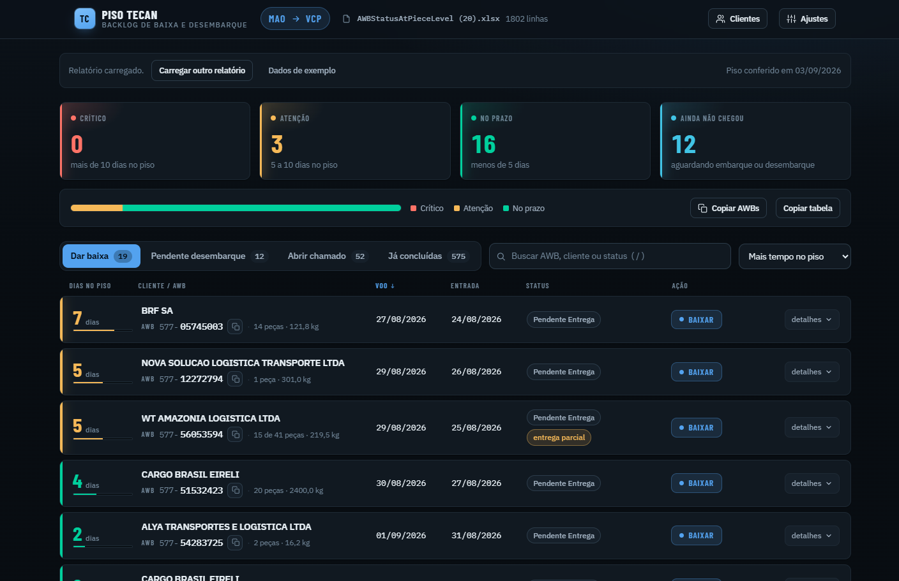
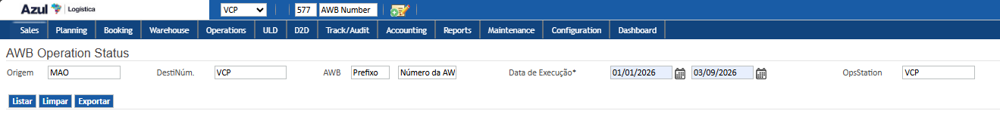
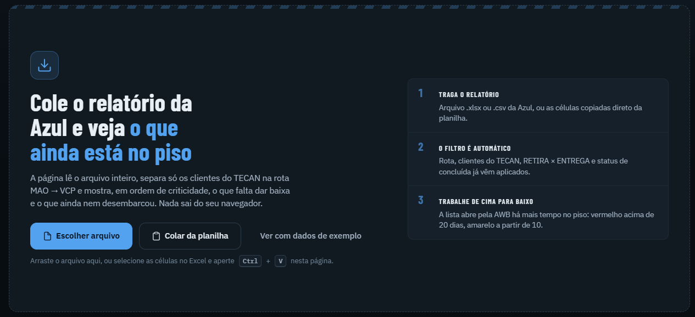
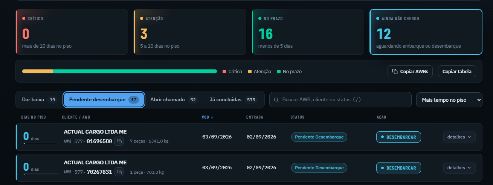
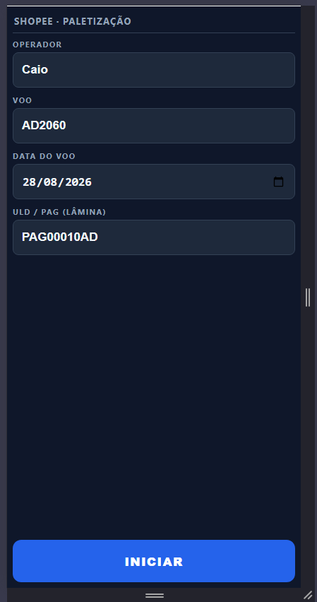
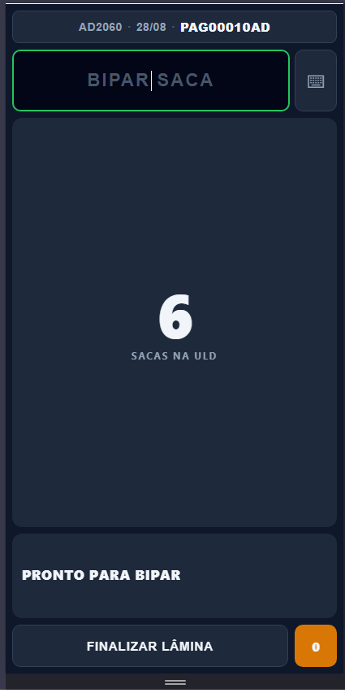
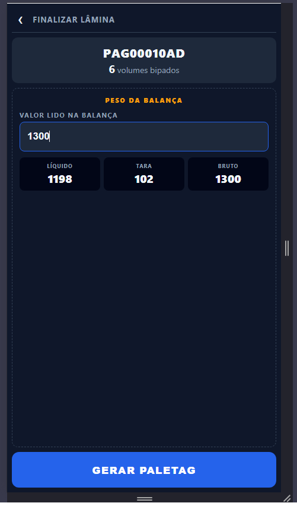
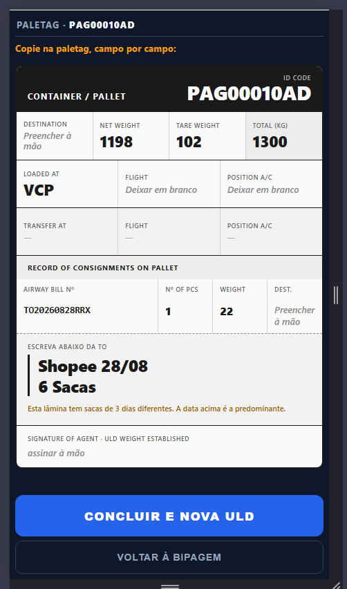
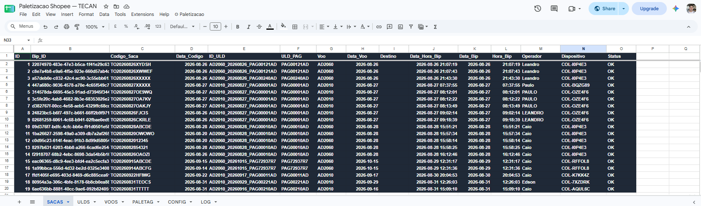
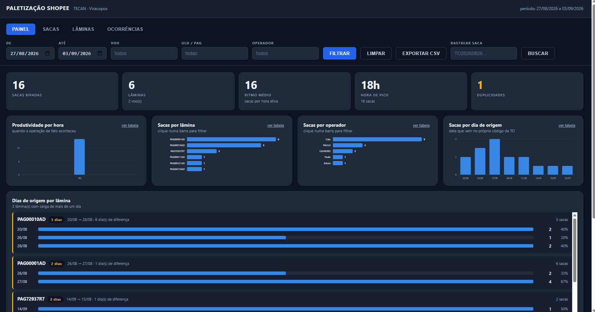

Duas ferramentas construídas dentro da operação, para o trabalho do dia a dia do terminal de cargas.
Lê o relatório de AWBs exportado do SmartKargo e mostra, em ordem de criticidade, o que ainda está no piso e o que falta dar baixa.
Registra cada saca bipada no coletor, entrega a Paletag pronta para transcrição e acompanha a operação em uma tela de relatórios.

Quatro faixas de criticidade no topo: crítico acima de 10 dias no piso, atenção de 5 a 10, no prazo abaixo de 5, e o que ainda nem chegou.
A lista abre pela AWB há mais tempo no piso. O topo da tela é sempre o que precisa de ação primeiro.
Cada linha traz cliente, AWB, peças, peso, voo e entrada. “Detalhes” abre todos os campos do relatório sem sair da tela.
O arquivo é lido no próprio navegador. Nada do relatório sai da máquina de quem está usando.

No SmartKargo: Reports › Standard › AWB Operation Status, com origem MAO, destino VCP e OpsStation VCP. Exportar.
Na página do Backlog, escolher o arquivo, arrastá-lo para a tela, ou colar as células direto do Excel.
Rota, clientes do TECAN, RETIRA × ENTREGA e o status de concluída já vêm aplicados. A lista chega pronta.


Dar baixa, pendente de desembarque, abrir chamado e já concluídas. A mesma carga aparece separada pelo que precisa ser feito com ela.
Priorização automática: cada fila já chega ordenada por tempo no piso, com o contador ao lado do nome da aba.
Copiar AWB na própria linha, além de Copiar AWBs e Copiar tabela para tratar em lote.
Decisão com o dado na mão: cliente, peças, peso, voo e dias no piso estão na mesma linha da ação.

Operador, voo, data e a PAG. É o único momento de digitação da operação.

O campo fica sempre armado. Cada bip responde com som, vibração e cor.

O operador digita um único número: o valor lido na balança.

A tela vira a réplica da Paletag e o operador copia campo por campo.
A tela não é um formulário — é um roteiro de transcrição. Replica o papel campo por campo, na mesma ordem e com os mesmos rótulos em inglês.
O que a ferramenta sabe aparece em destaque; o que ela não sabe é dito explicitamente: “Preencher à mão” e “Deixar em branco”.
A ferramenta identifica quando a lâmina reúne sacas de dias de origem diferentes e informa a data predominante, que é a que vai para o papel.

Codigo_Saca — o número da TO, com 15 caracteres exatos. É a chave de rastreio.
Data_Codigo — a data de origem, que vem de dentro do próprio código da saca.
ID_ULD — voo + data + PAG. É o que amarra a saca ao palete.
Estrutura plana, cada linha um fato: a base pode alimentar o Power BI direto, sem tratamento.

Filtro por período, voo, PAG e operador; rastreio de qualquer saca pelo código; exportação em CSV.
Produtividade por hora — o ritmo é calculado só sobre as horas com movimento, para refletir o trabalho real.
Dias de origem por lâmina — a composição de cada palete por data de origem, com percentual e amplitude.
Tudo isso é subproduto do registro: não exige trabalho adicional do barracão.
As duas rodam sobre ferramentas que o terminal já tem. Cadastros, parâmetros e ajustes de rotina são feitos sem mexer no sistema.